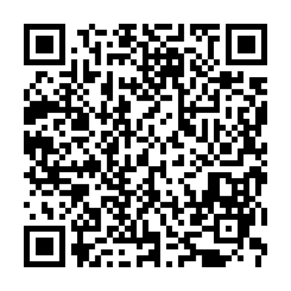

Dulce Vida Andina
El sabor natural del Perú en postres saludables
📲 Hacer pedido por WhatsAppEl sabor natural del Perú en postres saludables
📲 Hacer pedido por WhatsAppSomos un emprendimiento peruano que transforma la tuna —una fruta poderosa y local— en deliciosas alternativas saludables. Creamos productos nutritivos, accesibles y con identidad.
Disfruta la variedad de postres elaborados a base de tuna:
¿Tienes preguntas o quieres hacer un pedido especial?
📱 WhatsApp: +51 935 112 049
📱 WhatsApp: +51 916 723 152
📱 WhatsApp: +51 929 334 926
📧 Email: dulcevidaandina09@gmail.com
Escanea el código QR para ingresar rápidamente:
